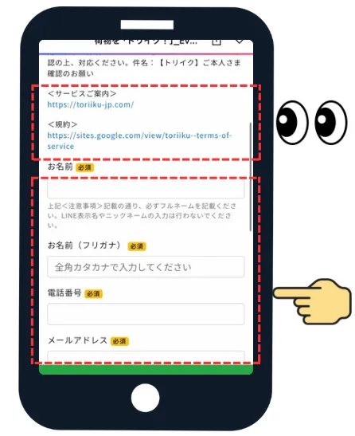
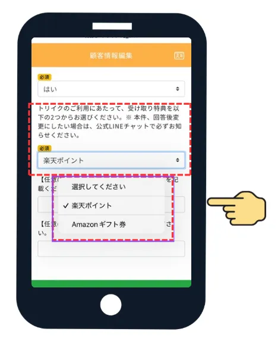
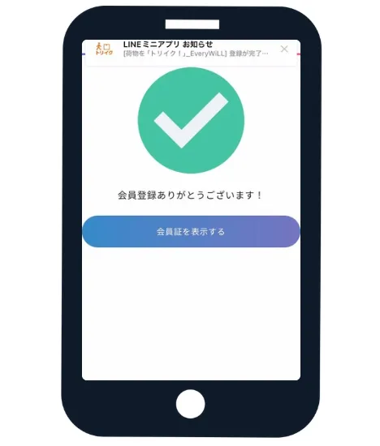

トリイク 仮名申請の方法
ネットショップに入力する荷受人名（＝伝票シールに記載される名前）を、本名ではなく別の名前にしたい方は、仮名申請をお願いします。
※ 仮名申請は新規会員登録時と会員登録後のどちらでも可能です。
※ トリイク公式WEBサイト「07：荷物の写真を撮って送る」で写真撮影する伝票に記載がある荷受人名と、申請した仮名が一致しなければ、ポイントを付与しません。
新規会員登録時に仮名申請する場合
「会員登録 会員情報確認」をクリック
トリイク公式LINEのメニュー欄の「会員登録 会員情報確認」ボタンをクリック。
登録情報を入力
会員登録画面が表示されます。＜サービス案内＞と＜規約＞を確認し、ご自身の本名（フルネーム）、フリガナ、電話番号、メールアドレス、郵便番号、住所を入力してください。

注意事項を確認して登録
注意事項等を確認のうえ、最下段の「会員登録を行う」の緑のボタンをクリック。

受け取る特典を選択
トリイクご利用後に受け取る特典を、「楽天ポイント」か「Amazonギフト券」のどちらかから選択します。

「荷物の宛名名」欄に仮名を入力
ネットショップに入力する（＝荷物に記載される）荷受人名を、本名ではなく別の名前（仮名）にしたい方は、この「荷物の宛名名」欄に入力してください。

オンラインでの本人確認に進む
登録フォームの送信完了後、登録したメールアドレス宛に本人確認用の案内メールが届きます。記載されたURLより、オンライン本人確認（eKYC）手続きを必ず実施してください。
- 件名
- 【トリイク】ご本人さま確認のお願い
- 差出人
- no-reply@support.gmo-ekyc.com
承認審査完了で登録完了
提出した本人確認書類が運営側で正しく検証され「承認」となった時点で、申請した仮名を含む会員登録プロセスがすべて完了します。

会員登録後に仮名申請（変更・追加）する場合
画面右下の「マイページ」メニューをクリック
トリイク公式のフッターメニュー、またはLINE連携メニューから、画面右下にある赤枠で囲まれた「マイページ」アイコンをクリックします。

メニュー内の「会員情報」欄をクリック
マイページのメニュー項目が一覧で表示されます。紹介コード項目の下部にある、赤枠の「会員情報」をクリックして進みます。

会員情報変更内の「変更」ボタンをクリック
会員情報変更の画面が開きます。「変更には本人確認が必要です」というアナウンスの右横にある、赤枠のオレンジ色の「変更」ボタンをクリックします。

「荷物の宛名名」に仮名を入力して「本人確認へ進む」をクリック
編集用のフォーム画面が表示されます。スクロールし、赤枠で囲まれた「荷物の宛名名（任意）」の入力欄に、新しく利用・追加したい仮名を入力します。
入力後、そのすぐ下部にあるオレンジ色の「本人確認へ進む」ボタンをクリックしてください。

本人確認手続きと運営による承認完了
画面のガイダンスに沿ってスマートフォンのカメラ等を使用し、本人確認の登録手続きを行います。
提出した情報をもとに運営側での審査が行われ、無事に「承認」された時点で、設定した新しい仮名への変更・申請手続きが完了となります。